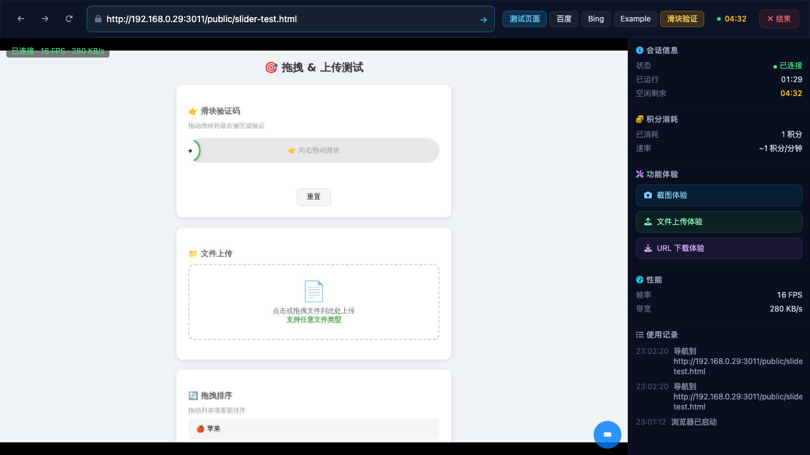
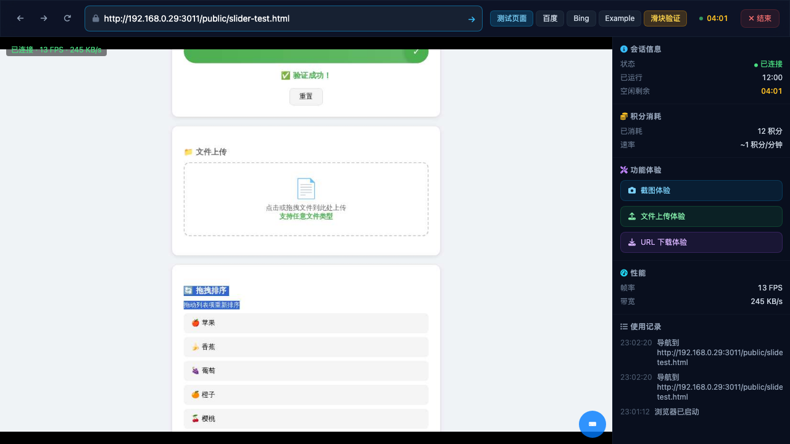
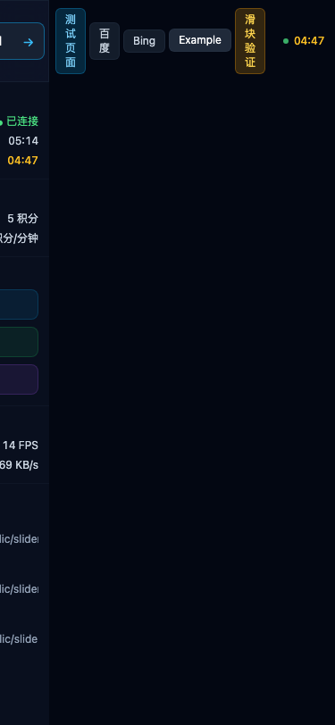
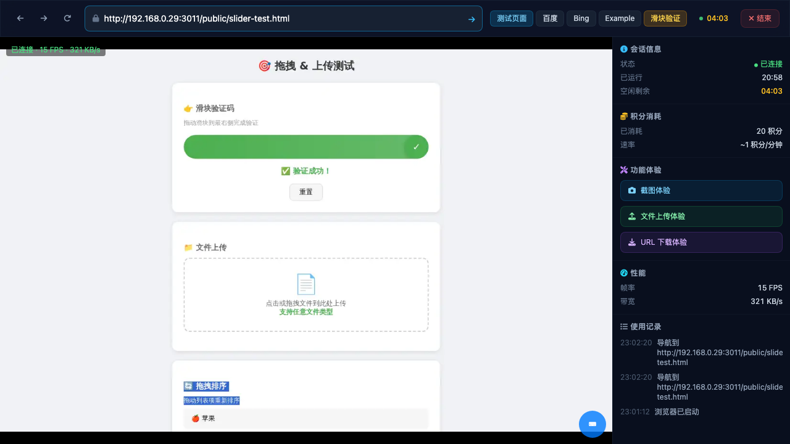
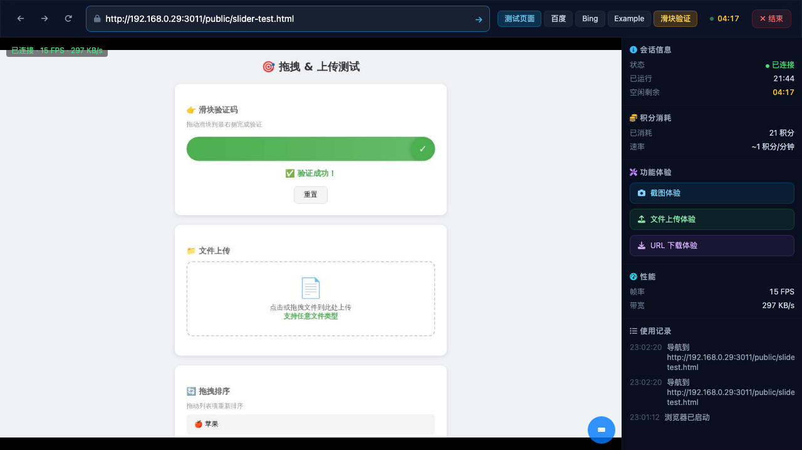
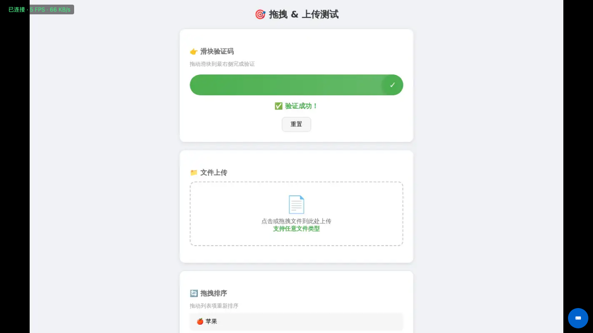
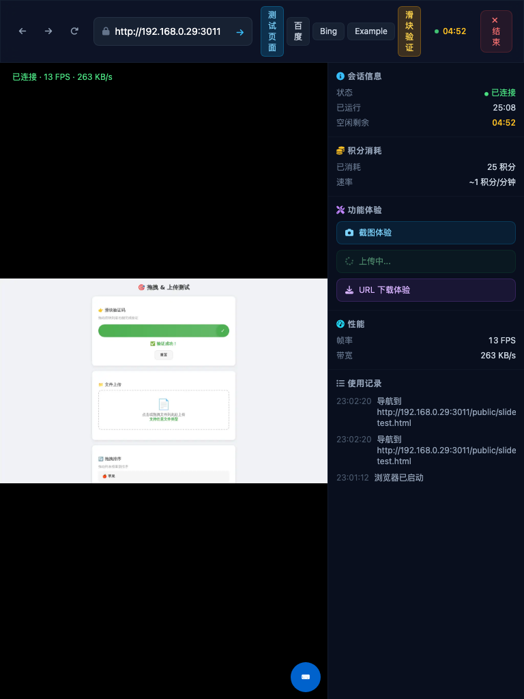
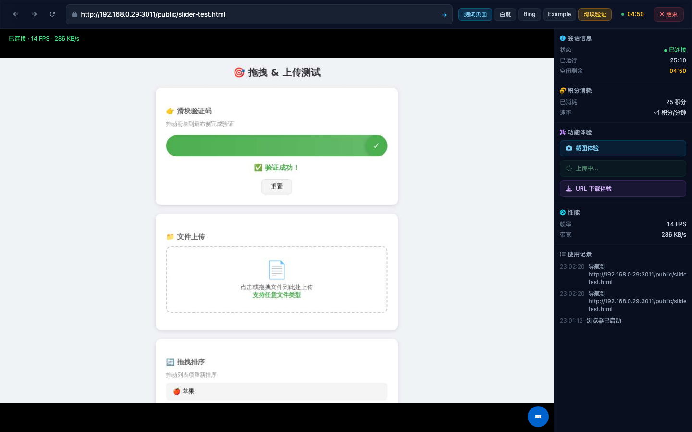

Opened Demo page → Started session → Navigated to slider test page → Sent mousedown/mousemove/mouseup events via BrowserViewer.instance.send() → Slider dragged to right side → Verification succeeded with "验证成功!" message.
Key finding: Used BrowserViewer.instance.send() to forward mouse events through WS to remote browser. Coordinates (x:389→880, y:188) successfully dragged the slider past 90% threshold.

Scrolled down to sort section → Sent mousedown on sort item → Progressively dragged down with mousemove events → Sort order changed from (苹果,香蕉,樱桃,葡萄,橙子) to (苹果,香蕉,葡萄,橙子,樱桃).
Key finding: Sort items use custom mousedown handler with dy>40px threshold per swap. Required scrolling down 200px to bring items into remote browser viewport.

Created new session with iPhone UA (375x812) → Clicked start → WS connected at 15 FPS, 80 KB/s → Sent touchstart/touchmove/touchend events → Viewer area showed dark/empty screen despite WS connection being active.
Key finding: Mobile viewport (375x812) causes the browser viewer iframe to render with a dark/empty content area. WS connects and streams frames (15 FPS confirmed), but the visual rendering fails. Touch events were sent but result could not be visually verified.

Navigated to upload area on slider test page → Clicked upload area in remote browser → File picker dialog cannot be displayed through remote viewer (OS-level dialog). The "文件上传体验" button in demo sidebar was also tested but operates on the remote browser.
Limitation: File upload dialogs are OS-level UI elements that cannot be captured or interacted with through the remote browser viewer. This is a fundamental limitation of the screen-streaming approach.


Created demo session via API → Opened standalone browser-viewer URL with sessionId and token → Remote browser content displayed correctly showing slider test page with all sections (slider ✓, upload, sort, event log). Performance: 66 KB/s bandwidth.
Key finding: Standalone viewer works independently from the demo page, using the same WS connections. Displays remote browser content with proper FPS and bandwidth metrics.



Note: 429 errors are expected when creating multiple demo sessions in rapid succession. Rate limit resets after cooldown period.
| Module | Status | Last Verified | Notes |
|---|---|---|---|
| demo | verified | 2026-05-12 | Version 2 - added slider/sort/upload coords, BrowserViewer API patterns |